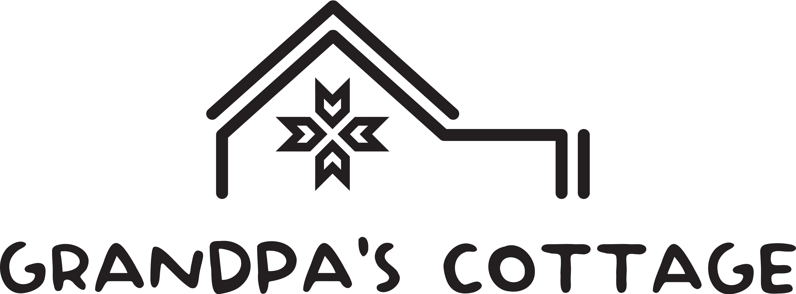

Our story begins with a deep connection to this land, as our familly has roots and ancestors deeply embedded in the rich tapestry of Barsana's history. With a desire to preserve our heritage and share its beauty with others, we embarked on a journey to restore an old traditional house, blending the warmth of Maramureș hospitality with modern comfort.
As locals, we take pride in showcasing the unique cultural heritage of our village. Guests staying at our house will have the opportunity to immerse themselves in the rhythms of village life, from participating in traditional activities to savoring homemade delicacies prepared with care by our family.
- DJ185 401, Bârsana
- Maramureș, România
- +40 773 393 416